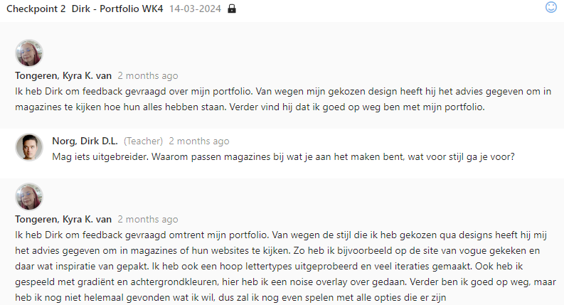
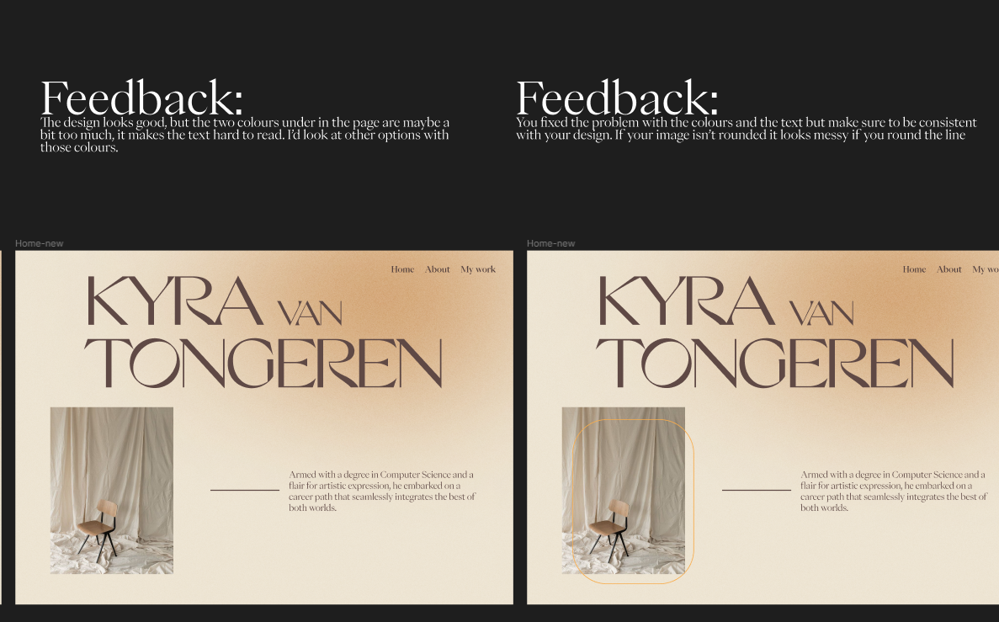

In terms of personal leadership, I actively sought feedback on both my individual portfolio and our group projects. Occasionally, I might overlook requesting feedback upfront, but more often than not, I made a point to gather insights from others. Even if I missed asking for feedback initially, I ensured to jot down any feedback received. Moreover, if someone provided feedback unprompted, I welcomed it wholeheartedly and integrated it into my work. This approach allowed me to constantly refine and improve, fostering a culture of continuous learning and growth in both personal and collaborative endeavors.
 When I forget to ask for a feedpulse I'll write it down and incorperate it in my design. This way I can still look back on the feedback eventhough it's not in my feedpulse. I'll also have the feedback at the frame where I asked for feedback, This way I can also see how i've incorperated the feedback in my design and maybe even tweak it if I still don't like it.